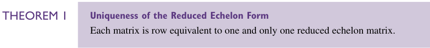
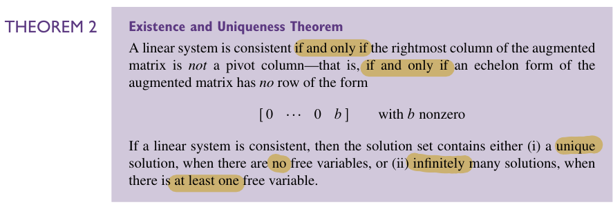
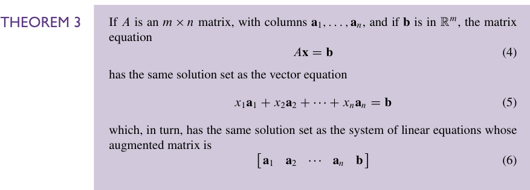
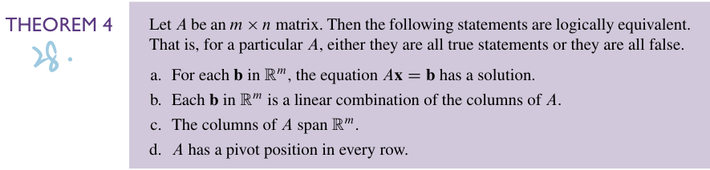
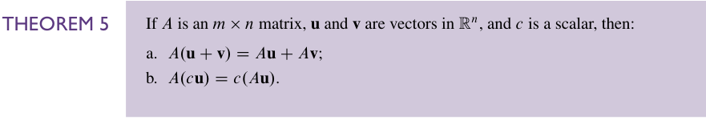
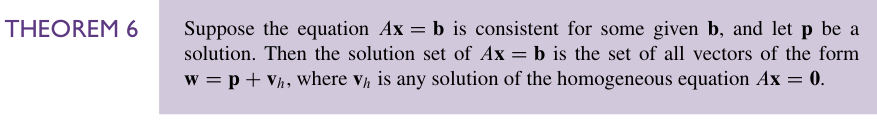
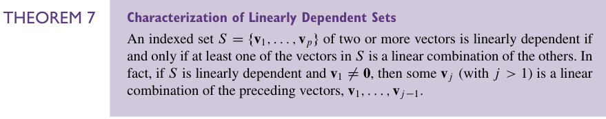
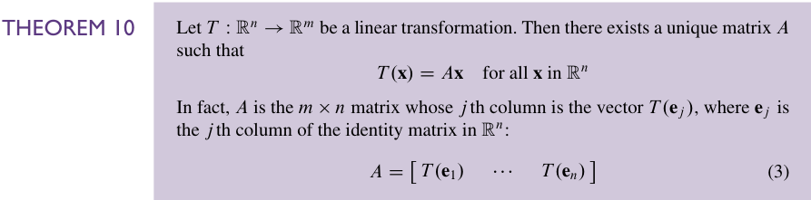
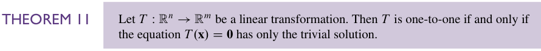
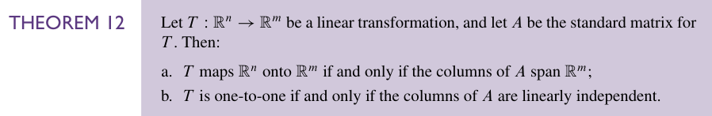

Chapter 01 Summary#
在这一章中，我们学到了很多有关 线性系统 的知识。
我们学到了下面这些定理：
定理#
Theorem 1#

REF 的 唯一性定理，证明好像没有想象中的简单。用到了一些后面的思想，到时候再补吧
Theorem 2#

存在性和唯一性定理，告诉我们怎么判断一个线性系统是 consistent 的还是 inconsistent 的，以及解是 无穷多组 还是 唯一的。
consistent 的判定依赖于 pivot column 的判定，也就是增广矩阵的最右一列不是 pivot column。
而 pivot column 是一个基于 REF 的概念。
如果线性系统有解，那么解的个数取决于有无 自由变量。有自由变量就有无穷多组解，无自由变量就只有一组解。
自由变量 同样是一个基于 REF 的概念。
Theorem 3#

指出的是 矩阵方程、 矢量方程、 增广矩阵 在什么时候等价（或者也可以认为是在说三者的 等价性 ）
Theorem 4#

指出了下面四个关于\(m\times n\)矩阵\(A\)的说法等价：
- 对于每一个在 \(ℝ^{m}\) 上的 \(\mathbf{b}\)，矩阵方程\(A\mathbf{x}=\mathbf{b}\)有解
- 每一个在 \(ℝ^{m}\) 上的 \(\mathbf{b}\) 都是矩阵\(A\)的列的线性组合
- \(A\)的列张成空间\(ℝ^m\)
- \(A\)在每一行都有一个 pivot position
Theorem 5#

讲的是矩阵和向量运算中的 分配律 和 结合律
Theorem 6#

讲的是矩阵方程 \(A\mathbf{x}=\mathbf{b}\) 的解可以被看做 通解加特解，这个通解指的是令 \(\mathbf{b}=\mathbf{0}\) 给出来的解，特解就是正常的 \(A\mathbf{x}=\mathbf{b}\) 的解。
这里也提供了一种 Uniqueness 的判定——存在非平凡通解等价于线性系统有非唯一解。
Theorem 7#

有关 线性相关 的性质和判定，也就是 至少一个 向量可被其它向量表示 等价于 线性相关
Theorem 8#

向量数大于元素数的向量集线性相关。
Theorem 9#

存在 零向量 的向量集线性相关。
Theorem 10#

这个是说明每一个线性变换都可以用一个矩阵表示。同时这个矩阵的第 \(j\) 列事实上就是 \(T(\mathbf{e}_{j})\)。
Theorem 11#

这是说单射等价于 \(T(\mathbf{x}) = \mathbf{0}\) 只有平凡解。
Theorem 12#

这是说满射等价于 \(A\) 的列张开 \(ℝ^m\)，单射等价于 \(A\) 的各列线性无关。
基本方法#
求线性方程组的解。#
- 写出增广矩阵( augmented matrix )
- 对这个矩阵做基本行变换，把它化简为 (R)REF
- 依据 RREF 给出最后方程的解。
判断是否线性相关#
- 写出增广矩阵\(\begin{bmatrix}\mathbf{a}_{1}&\mathbf{a}_{2}&\cdots&\mathbf{a}_{n}&\mathbf{0}\end{bmatrix}\)
- 不含非平凡解则线性无关
- 含非平凡解则线性相关
写出参数形式的解#
1、行简化增广矩阵至行最简阶梯形
2、用自由变量表示每一个基本变量
3、把 \(\vec{x}\) 中的每一项用自由变量表示
4、以自由变量为参数将\(\vec{x}\)分解为线性组合
原文
一些等价的说法#
01#
一个线性系统有解 = 增广矩阵的最右列不是 pivot column = 增广矩阵的 echelon form 没有行是这个形式：\(\begin{bmatrix}0&\cdots&0&b\end{bmatrix}\)，其中 \(b\) 非 0。
02#
一个线性系统有唯一解 = （有解）且无自由变量
03#
一个线性系统有无穷多解 = （有解）且有至少一个自由变量
04#
矩阵方程 \(A\mathbf{x} = \mathbf{b}\) = 矢量方程 \(\sum_{i=1}^{n}\mathbf{a}_{i}x_{i} = \mathbf{b}\) = 增广矩阵\(\begin{bmatrix}\mathbf{a}_{1}&\mathbf{a}_{2}&\cdots&\mathbf{a}_{n}&\mathbf{b}\end{bmatrix}\)
我们已经会求解的是增广矩阵。所以其它两个形式也可以用增广矩阵来看，进行求解。
05#
对于每一个在 \(ℝ^{m}\) 上的 \(\mathbf{b}\)，矩阵方程 \(A\mathbf{x}=\mathbf{b}\) 有解 = 每一个在 \(ℝ^{m}\) 上的 \(\mathbf{b}\) 都是矩阵 \(A\) 的列的线性组合 = \(A\) 的列张成空间 \(ℝ^m\) = \(A\) 在每一行都有一个 pivot position.
06#
\(A\mathbf{x} = \mathbf{b}\) 有解 = \(\mathbf{b}\) 是 \(A\) 的列的线性组合 = \(\mathbf{b}\) 在 Span{\(\mathbf{a_{1}},\mathbf{a_{2}},\cdots,\mathbf{a_{n}}\)}
07#
\(A\mathbf{x} = \mathbf{0}\) 有非平凡解 = 方程含有至少一个自由变量 等价于 \(A\) 的各列线性相关。
这可以看成是等价 03 的一个特例。
08#
至少一个 向量可被其它向量表示 等价于 线性相关
当然这个事情更好的操作方式是像 Chapter 01 Summary#判断是否线性相关 一样做，因为你一般挺难看出哪个向量可以被其它向量表示的。
09#
单射 等价于 \(T(\mathbf{x}) = \mathbf{0}\) 只有平凡解 等价于 \(A(\mathbf{x}) = 0\) 不含有自由变量等价于\(A\) 的各列线性无关。
10#
满射等价于 \(A\) 的列张开 \(ℝ^m\)等价于对于每一个在 \(ℝ^{m}\) 上的 \(\mathbf{b}\)，矩阵方程 \(A\mathbf{x}=\mathbf{b}\) 有解等价于每一个在 \(ℝ^{m}\) 上的 \(\mathbf{b}\) 都是矩阵 \(A\) 的列的线性组合 等价于 \(A\) 在每一行都有一个 pivot position.Chapter 01 Summary#05